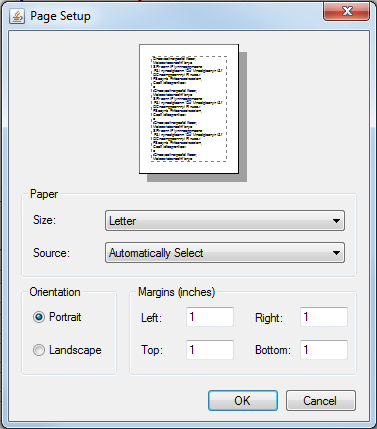

The topics covered in this section include:
Writing Data to External Files
You can save the data representing the curves to use at a later time within OpenSim or to import into another application, such as Excel. The saved file uses the .sto format, text files that contain time-sequence data commonly encountered in motion capture systems. The data are arranged in columns with each column representing, for example, a joint angle or a component of the ground reaction force. Each row in a motion file corresponds to a different time point. These are very similar to SIMM motion files (.mot) from MusculoGraphics, Inc., except they have the added flexibility of handling non-uniform time spacing between rows.
There are two ways to save the curves. The first way is click the right mouse button in the plot panel and select Export Data… from the drop down menu that appears. The second way is to right click the root node of the tree in the plot summary panel and select Export Data… from the menu that appears. Picking this option causes a file browser to appear. Using the file browser, select the name of the file and the directory in which to save the file. Press Save.
The Export Data… option saves all the curves in the displayed plot to the file. Since multiple curves with different domains (x-axes) can be displayed concurrently in the same plot, it is possible that a single storage file would not be adequate to represent this data. In this scenario, a separate file is created for every distinct domain (x-axis). A domain is considered distinct if it has a different number of points.
Exporting Images
You can save your plots as image files for example, for e-mailing or posting on websites. Currently, only the PNG image format is supported. Third-party software tools are freely available to convert PNG images to other formats.
To export a plot as a .png image file, right mouse click in the plot panel and select Export Image… from the drop down menu that appears. A file browser will appear and you will be prompted to select the name of the file and the directory in which to save the file. Press Save.
In cases where the image needs to be included in a publication, a better option would be to export the image to the PostScript format (see Preparing Your Data), since advanced editing tools (e.g., Adobe Photoshop) can be used to modify the resulting files (e.g., changing line styles, labels and annotations).
Exporting to PostScript
You can export your image file to the PostScript file format. This is particularly useful if you want to make changes to the plot (e.g., changing the line style or adding annotations) beyond the capabilities provided within OpenSim, since software tools like Adobe Photoshop are able to operate on individual components of a PostScript file.
To export your image file to PostScript, right mouse click in the plot panel and select Export PostScript… from the drop down menu that appears. A file browser will appear and you will be prompted to select the name of the file and the directory in which to save the file. Press Save.
Printing
You can print the plot to a printer by:
|  |
|
|---|
{kind=link}